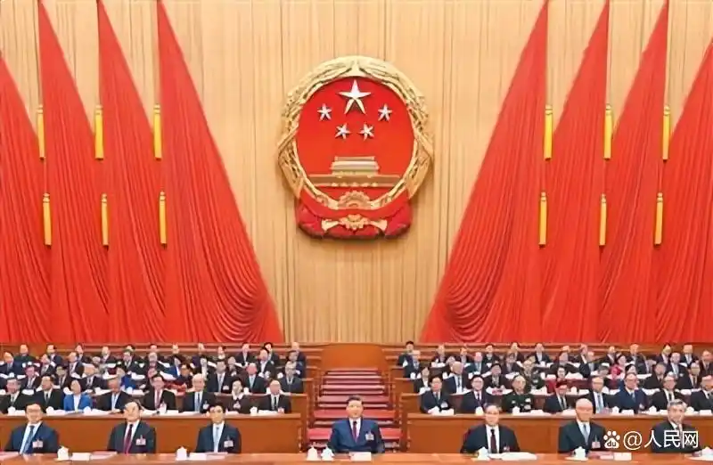

发布日期： 2026.03.12 分享到:
十四届全国人大四次会议在京闭幕
批准政府工作报告、“十五五” 规划纲要、全国人大常委会工作报告等
通过生态环境法典、民族团结进步促进法、国家发展规划法等 习近平签署主席令
习近平李强王沪宁蔡奇丁薛祥李希韩正等在主席台就座
赵乐际主持并讲话

3月12日下午，第十四届全国人民代表大会第四次会议在北京人民大会堂闭幕。党和国家领导人习近平、李强、王沪宁、蔡奇、丁薛祥、李希、韩正等在主席台就座。新华社记者 谢环驰 摄
下午3时40分，赵乐际宣布：中华人民共和国第十四届全国人民代表大会第四次会议闭幕。大会在雄壮的国歌声中结束。
在主席台就座的还有：王毅、尹力、石泰峰、刘国中、李干杰、李书磊、何立峰、张国清、陈文清、陈吉宁、陈敏尔、袁家军、黄坤明、刘金国、王小洪、张升民、吴政隆、谌贻琴、张军、应勇、胡春华、沈跃跃、王勇、周强、何厚铧、梁振英、巴特尔、苏辉、邵鸿、高云龙、穆虹、咸辉、王东峰、姜信治、蒋作君、何报翔、王光谦、秦博勇、朱永新、杨震等。
中央和国家机关有关部门、解放军有关单位和武警部队、各人民团体有关负责人列席或旁听了大会。
外国驻华使节旁听了大会。
来源：新华社